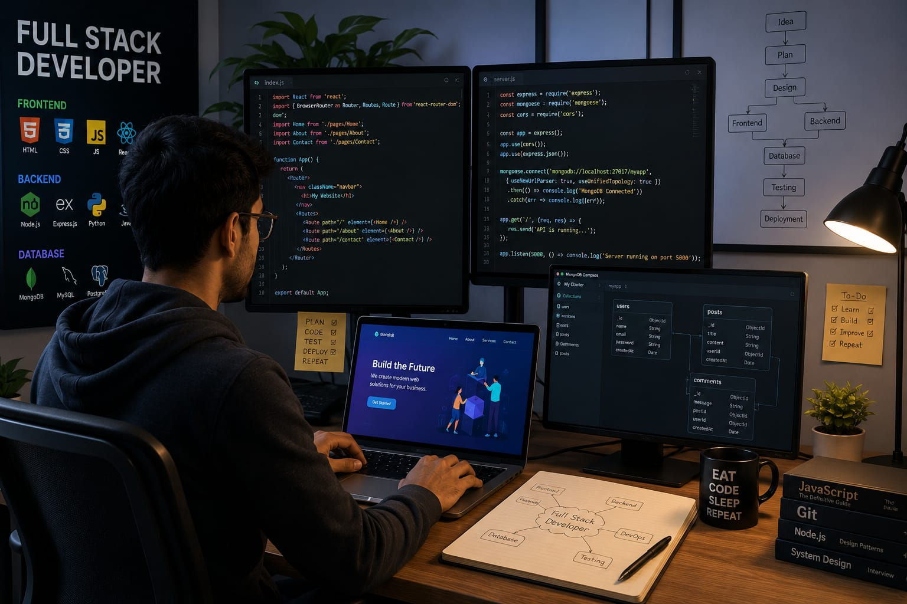

- An app or website has a frontend and a backend.
- Frontend is what the user sees and backend is the system behind it.
- Someone who builds both these parts is called a Full Stack Developer.
- 👉 In simple words: Full Stack Developers build both the frontend and backend parts of websites and apps.
Full Stack Developer
🧑💻 What Do They Do?

🎓 How to Become a Full Stack Developer
These beginner-level courses help students learn frontend development, backend programming, databases, APIs, and complete web application development skills.
Diploma in Computer Science & Engineering (CSE)
Duration: 3 Years
Eligibility: Class 10 Pass
Exam: Polytechnic Entrance Exam / Merit-Based Admission
Certification in Full Stack Web Foundations
Duration: 4 – 8 Weeks
Eligibility: Class 10 Pass
Exam: No Exam (Project-Based Tasks)
Diploma in Full Stack Web Development
Duration: 1 – 2 Years
Eligibility: Class 10 Pass
Exam: Direct Admission / Institute-Level Test
📝 Exam Details
(Click on the exam name to see full details)
Polytechnic Entrance Exam Merit-Based Admission Direct Admission Institute-Level TestNote: Many full stack developers improve their skills by building websites, creating apps, practicing coding, and working on real-world projects regularly.
These programs offer comprehensive university-level training in frontend frameworks, backend development, databases, APIs, cloud basics, and complete web application development.
Bachelor of Computer Applications (BCA)
Duration: 3 Years
Eligibility: 10+2 Pass (Any Stream)
Exam: CUET-UG / State-level CET / University Merit
B.Tech in Computer Science / Information Technology
Duration: 4 Years
Eligibility: 10+2 Pass (with Physics, Chemistry, and Mathematics)
Exam: JEE Main / JEE Advanced / State Engineering Entrance Exams
BSc Computer Science
Duration: 3 Years
Eligibility: 10+2 Pass
Exam: CUET-UG / Merit-Based Admission / University Entrance
📝 Exam Details
(Click on the exam name to see full details)
CUET-UG JEE Main JEE Advanced State Engineering Entrance Exams Merit-Based Admission University Entrance ExamsNote: Students usually practice full stack development by building websites, creating APIs, working with databases, and developing real-world applications.
Diploma holders can directly enter the 2nd year of degree programs and strengthen their frontend, backend, database, and deployment skills faster.
B.Tech Lateral Entry (CSE / IT)
Duration: 3 Years
Eligibility: Diploma in Engineering (CSE/IT or related)
Exam: State Lateral Entry Exams
BCA Lateral Entry
Duration: 2 Years (Direct entry into 2nd year of a 3-year program)
Eligibility: Diploma in CSE, IT, or Computer Applications
Exam: Merit or University Entrance
📝 Exam Details
(Click on the exam name to see full details)
State Lateral Entry Exams University Entrance Exam Merit-Based AdmissionNote: Diploma students often improve faster by creating full stack projects, APIs, dashboards, and database-driven applications.
Designed for graduates looking to build complex enterprise web platforms, manage cloud infrastructures, and master complete end-to-end software delivery.
Master of Computer Applications (MCA)
Duration: 2 Years
Eligibility: Graduate (BCA, BSc CS, or any degree with Maths at 10+2 or Graduation level)
Exam: NIMCET / State-level MCA Entrance Exams / Interview
Post Graduate Program in Full Stack Software Engineering
Duration: 6 – 11 Months
Eligibility: Graduate
Exam: Direct/Merit-based admission
📝 Exam Details
(Click on the exam name to see full details)
NIMCET State-level MCA Entrance Exams Interview-Based Admission Direct Admission Merit-Based AdmissionNote: Graduates usually strengthen their full stack skills through internships, cloud deployment practice, API integrations, and large-scale software projects.
Note:
Age limits, marks, and admission process may vary depending on the college or state.
These courses are available in many colleges and universities across India. You can choose colleges based on your location, budget, and entrance exams.
🏛️ Top Colleges for Full Stack Development & Software Engineering
(Tap on a college to view the details)
After 10th Pass (Diplomas & Foundation)
National Institute of Electronics & Information Technology (NIELIT), New Delhi Aptech Computer Education (Multiple Locations) Jetking Infotrain (Multiple Locations) Government Polytechnic Colleges (Various States) CADD Centre Training Services, IndiaAfter 12th Pass (Bachelor's Degrees)
Indian Institute of Technology (IIT) Madras, Chennai Indian Institute of Technology (IIT) Bombay, Mumbai International Institute of Information Technology (IIIT), Hyderabad Birla Institute of Technology & Science (BITS), Pilani Vellore Institute of Technology (VIT), Vellore Christ University, BengaluruAfter Diploma (Lateral Entry)
Delhi Technological University (DTU), New Delhi Jadavpur University, Kolkata Anna University, Chennai Thapar Institute of Engineering and Technology, Patiala PSG College of Technology, CoimbatoreAfter Graduation (Master's Degrees & Advanced Stacks)
National Institute of Technology (NIT), Trichy Jawaharlal Nehru University (JNU), New Delhi University of Hyderabad (UoH), Hyderabad Delhi Technological University (DTU), New Delhi Birla Institute of Technology (BIT), MesraSTEP 1
Imagine you are working as a Full Stack Developer.
STEP 2
A company asks you to build a complete website or app.
STEP 3
You create the frontend using buttons, menus, layouts, and interactive designs.
STEP 4
You also build the backend system, databases, APIs, and server logic.
STEP 5
You test the app, fix bugs, and make sure everything works smoothly.
STEP 6
If you enjoy coding, problem-solving, and building complete applications, this career may suit you.
Where do Full Stack Developers work? (Job Roles + Growth)
These are some roles you can explore in Full Stack Development.
You usually start with beginner roles and grow with experience.
🟢 Beginner Roles
💻
Junior Full Stack Developer
(After Short-Term Course / Diploma)
Writes simple frontend and backend code for basic applications.
🛠️
Full Stack Intern
(After Certificate / Diploma / BCA)
Tests web pages, APIs, and databases while learning development tools.
🌐
Web Application Developer
(After Diploma / Graduation)
Builds complete websites with frontend pages and backend systems.
🗄️
Database Support Developer
(After Online Course / Graduation)
Maintains databases and supports data-driven web applications.
🔵 Mid-Level Roles
⚙️
Full Stack Engineer
(After BCA / B.Tech / BSc CS + Experience)
Develops complete software systems including frontend and backend features.
☁️
Cloud Application Developer
(After Cloud Training + Experience)
Builds and deploys applications using cloud platforms and services.
🔗
API & Backend Integrator
(After Backend Certification + Experience)
Connects frontend apps with APIs, servers, and databases.
🚀
Software Deployment Engineer
(After Advanced Training + Experience)
Deploys applications, manages updates, and improves software performance.
🟣 Advanced Roles
🏗️
Full Stack Architect
(After MCA / M.Tech + Experience)
Designs large-scale software systems and technology frameworks.
🎯
Technical Product Lead
(After Postgraduate Program + Experience)
Guides software teams and manages full product development cycles.
👨💼
Engineering Manager
(After Senior Development Experience)
Leads engineering teams and oversees large software projects.
💻
International Software Companies
Full Stack Developers build complete web platforms for global technology companies.
🌐
Global Web Development Agencies
Many agencies hire full stack developers to create websites and business applications.
📱
Mobile & Web App Startups
Full Stack Developers help startups build frontend interfaces and backend systems.
☁️
Remote Full Stack Development Jobs
Many international companies hire full stack developers for remote work opportunities.
🛒
Global E-Commerce Companies
Developers build shopping websites, payment systems, and customer dashboards.
🚀
Cloud & SaaS Product Companies
Full Stack Developers create cloud-based software platforms used worldwide.
(Click Yes or No for each question)
1. Do you notice the design when using websites or apps?
2. Have you ever wondered how websites or apps are made?
3. Have you ever thought of creating a website or app?
4. Are you interested in learning coding (computer language)?
5. Imagine a company asks you to create a website for online shopping. You design the frontend pages that people see and build the backend systems that stores products and customer details. You make sure everything works properly. Does this excites you?